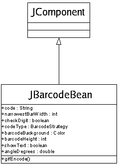

To go straight to the JavaDocs, click here.
To see code examples, click here.
Bean PropertiesIn addition to the standard javax.swing.JComponent properties, jbarcodebean.JBarcodeBean has the following properties:
Bean Methods
Bean Eventsjbarcodebean.JBarcodeBean does not raise any events other than those of javax.swing.JComponent. |
 |
[JavaDocs] | [Code Examples]
Copyright © 2004 Dafydd Walters